Jsem Petra, moderátorka s 29letou praxí v rádiu, televizi i na pódiu. Provázím konference a společenské akce, učím lidi mluvit sebejistě a srozumitelně.
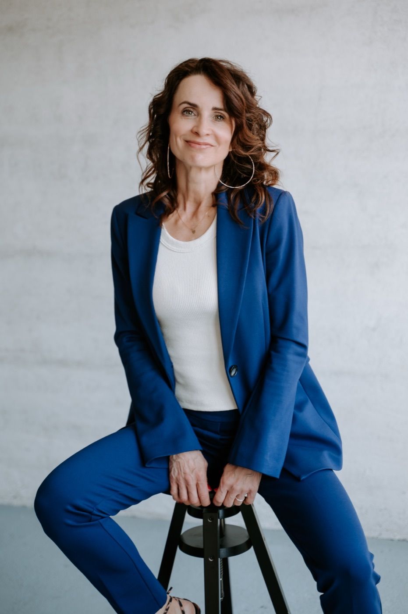
Působila jsem v TV Prima, podílela se na pořadech i zpravodajství České televize a ČT24 a dnes moderuji v Českém rozhlasu, a k tomu nespočet akcí na pódiu.
Věřím, že umět mluvit srozumitelně a bez trémy je základem úspěšné sebeprezentace. Proto dnes vedu kurzy, které jsou vždy ušité na míru konkrétnímu člověku i firmě.
Vím, že postavit se před publikum u Vás může vzbuzovat obavy. Ale také vím, že vystupování a mluvení je řemeslo, které se dá naučit, a ráda Vás jím provedu.
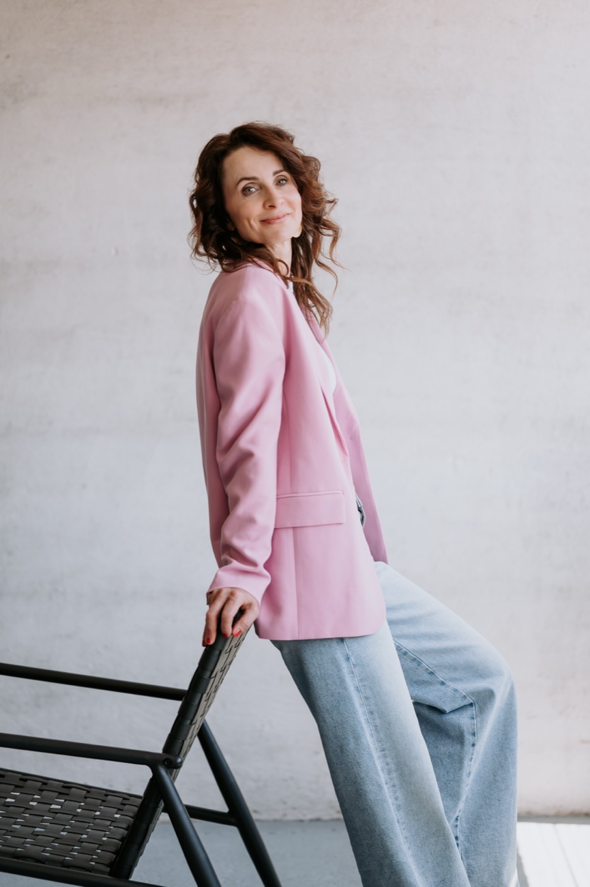
Moderuji konference a panelové diskuze, galavečery a předávání cen, firemní akce i společenské večery. Postarám se, aby program plynul a hosté se dobře bavili.
Každou akci ladím individuálně podle Vašeho programu, tématu a publika. Termín i podobu domluvíme osobně.
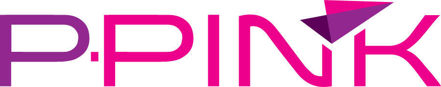
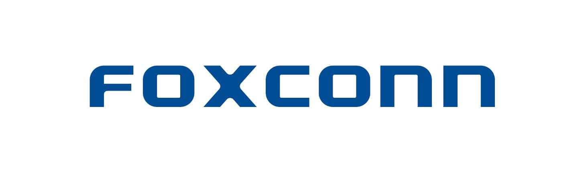
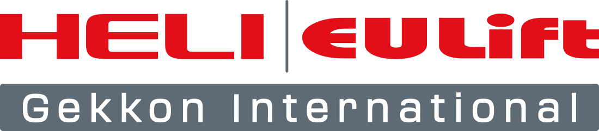
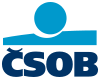
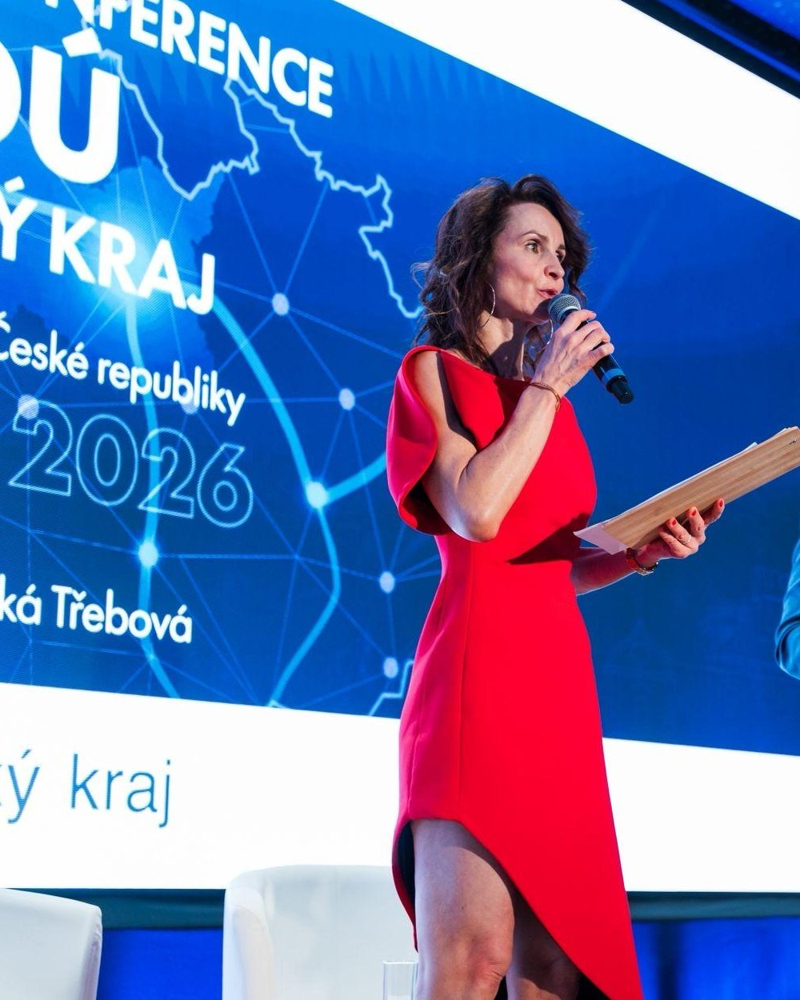
Každá lekce je ušitá přesně na míru, Vám i Vaší firmě. Společně se zbavíme trémy i slovní vaty, doladíme intonaci a artikulaci a zapracujeme na gestech, řeči těla i postoji. Výsledek je slyšet i vidět už po pár hodinách.
Platíte předem za celý kurz, lze fakturovat na firmu.
Školila jsem např. ve firmách Everythink, Montáže Brož, VAK, Pardubický KÚ, RRA PK nebo Medfima.
Jedna z nejlepších investic do sebe. Kurz byl maximálně praktický, díky Petřiným zkušenostem z moderování a prezentací měla ke každému tématu co říct z praxe. Doporučuji každému, kdo chce zapracovat na svém projevu.
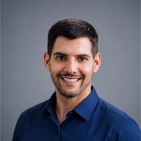
Po návratu do práce po mateřské pro mě nebylo snadné znovu získat jistotu při mluvení před lidmi. Kurzy mluvení u Petry mi tuhle jistotu daly, pomohly mi cítit se přirozeněji, sebevědoměji a nebát se říct si o slovo. Péťo, děkuji za tvůj individuální přístup, energii a podporu.
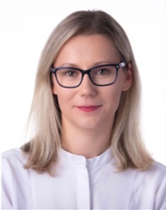
Petra moderuje showference P-PINK, největší byznys event v Pardubickém kraji, už několik ročníků po sobě. Skvělý výkon a maximálně profesionální domluva pokaždé, přesně na co se můžeme spolehnout.
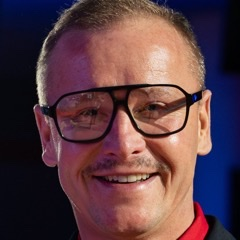
Po skvělé zkušenosti s moderací Grand Opening Day 2025 jsme Petru oslovili znovu, tentokrát jako lektorku kurzu rétoriky pro naše interní trenéry a náboráře. Kurz byl prakticky zaměřený, plný konkrétních příkladů a tipů pro sebejisté vystupování.
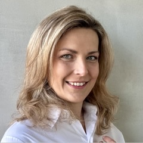
Petra nám uváděla naše CityZen nadační plesy. Pod jejím hlasem to mělo, jak se říká, „štávu“ a lidé se dobře bavili. A pamatuji si, že nám skvěle moderovala i charitativní dražbu.
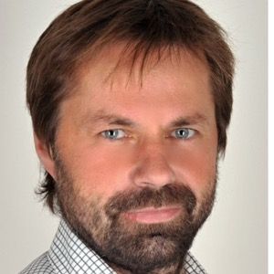
Petra pro naši agenturu pravidelně moderuje akce od menších setkání po velké konference. Vždy je skvěle připravená, umí jít do detailu a zároveň s lehkostí odlehčit situaci. Debatu vede spravedlivě, i když musí „krotit“ i významné osobnosti. A ještě je moc milá.
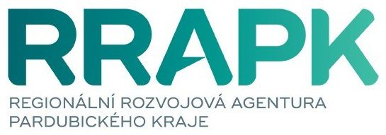
U Petry jsem absolvovala kurz mluvení. Osobně jsem se totiž necítila jako ryba ve vodě na podiu s ozvučením a světly. Petra mě během lekcí metodicky vedla, jak pracovat s mikrofonem, tónem hlasu, pauzami a energií při mluvení. A ještě navíc mě naučila správně číst číslovky.
Spolupráce s Petrou je pro nás vždy zárukou profesionálního průběhu. Odborné konference i společenská setkání moderuje s lehkostí a elegancí, pohotově reaguje a každé akci dodá energii i přirozený spád. Těšíme se na další spolupráci.
Petra nám moderovala vinařskou akci na letišti v Pardubicích a spolupráce s ní byla skvělá. Oceňujeme její profesionální a zároveň individuální přístup a ochotu poradit. Nebála se ani vyzkoušet sabráž, čímž skvěle podtrhla atmosféru večera.
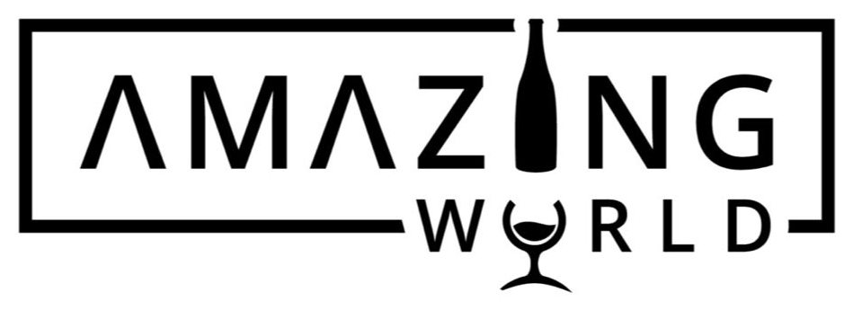
Petra je již několik let stálicí našich konferencí a vždy víme, že jsme v dobrých rukou. Je profesionální, pohotová a dokáže si poradit i s nečekanými situacemi s úsměvem a nadhledem. Děkujeme za dlouholetou spolupráci.
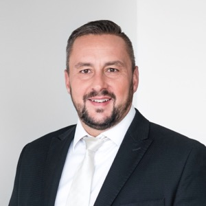
Do kurzu jsem se přihlásila sama od sebe a musím říct, že to byla jedna z nejlepších osobních investic. Oceňuji především to, jak jsou lekce praktické a že se nahrávají, takže se k nim mohu kdykoliv vrátit. Pokud váháte, určitě doporučuji.
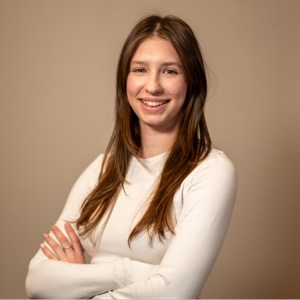
S Peťou spolupracujeme neuvěřitelných 25 let, od módních přehlídek až po firemní akce a konference. Za ty roky jsme sehraný tým. Petra je profík, ke každé akci přistupuje individuálně a záleží jí i na přípravě scénáře.
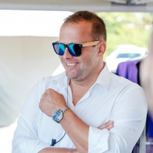
Příjemná, precizní, vtipná a profesionální každou vteřinu. S Petrou jsem spolupracoval na několika akcích jako host na pódiu i jako pořadatel. Bavilo mě, že Petru v zákulisí ani na scéně nic nerozhodí a vše zvládne s elegancí, šarmem a úsměvem. Moderátorka, která vás nenechá ve štychu, je k nezaplacení.
Plánujete konferenci, hledáte lektorku na firemní kurz, nebo se chcete zlepšit v projevu? Napište mi, ozvu se obvykle do jednoho dne.
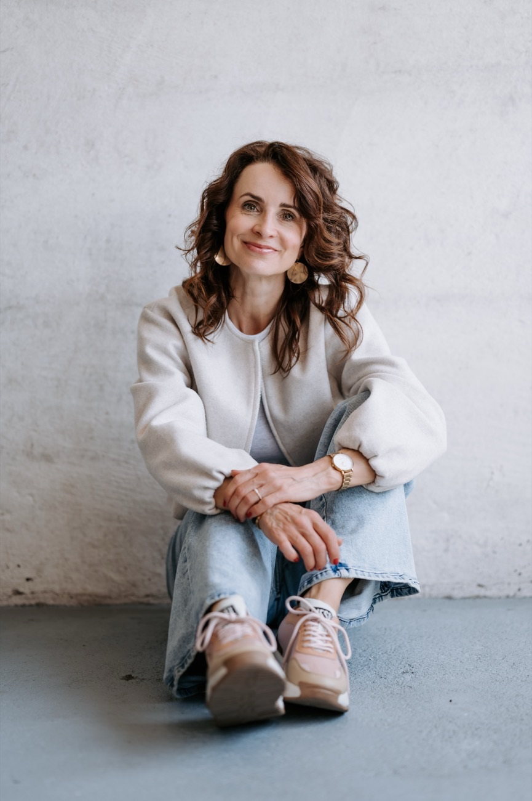